一、兵器概説
二、各部解剖
三、組立図
四、弾薬包解剖
五、弾道図
六、射撃盤概略
七、砲員
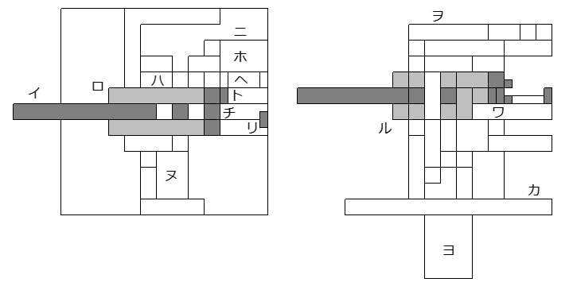
イ,砲膅 ロ,推進発条筒 ハ,砲架 ニ,装填台 ホ,装填手
ヘ,装填架 ト,信管調定器 チ,尾栓 リ,装填頭 ヌ,射手
ル,装填発条筒 ヲ,防楯 ワ,駐退機 カ,旋回盤 ヨ,把手
一、装填頭ヲ装填位置マデ手動デ後退サセル
二、弾薬包ヲ装填架ニ載セル
三、装填架ヲ押シ膅軸上ニ移動サセル（信管ハ信管調定器ニヨリ自動的ニ調定サレル）
四、装填架ガ膅軸上ニ移動スレバ、装填頭ガ前進シ弾薬包ガ装填サレル
五、装填架ヲ元ノ位置ヘ戻セバ、自動的ニ尾栓ガ閉鎖サレル
六、射手ガ引金ヲ引ケバ発砲ス
七、発砲ニヨリ砲ハ後退シ、駐退機ハ其レヲ減速サセル
八、砲ガ後退スレバ、推進発条ハ圧縮サレ、同時ニ装填頭モ後退スル
九、推進発条ノ伸展ニヨリ砲ガ前進スレバ、尾栓ガ開放サレ、撃殻薬莢ガ排出サレル
十、以後ハ同様ニ装填ト発砲ヲ繰リ返ス
仰角 九十度
俯角 －十度
弾薬包 対空通常弾
最大射程 二百五米
最大射高 百四十二米
寸法 三十糎 三十糎 三十糎
重量 一・四瓩
操作人員 二名
平面図
正面図 側面図 背面図
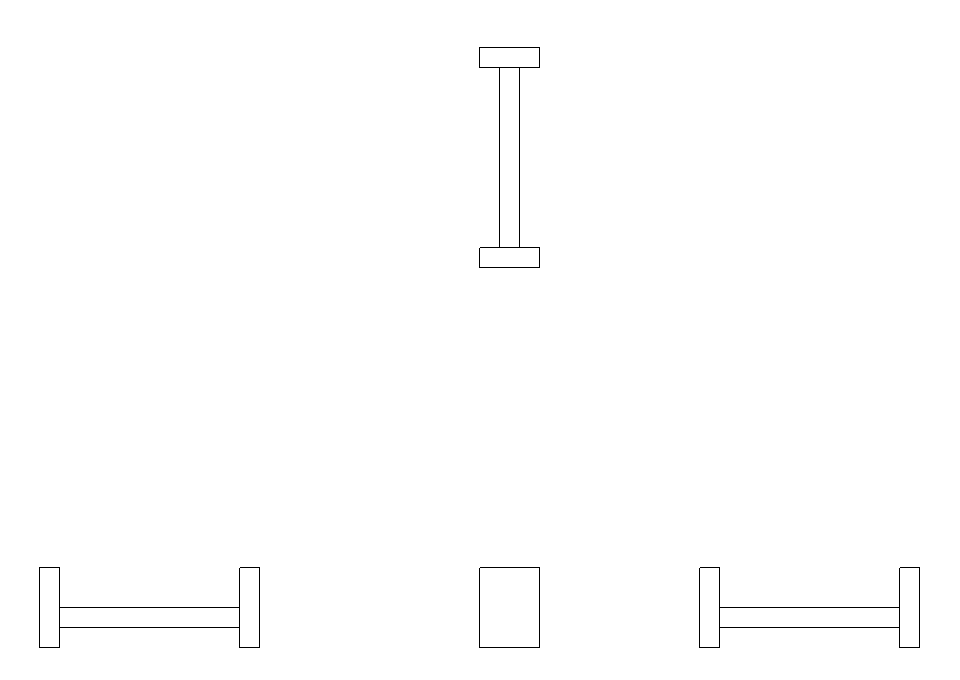
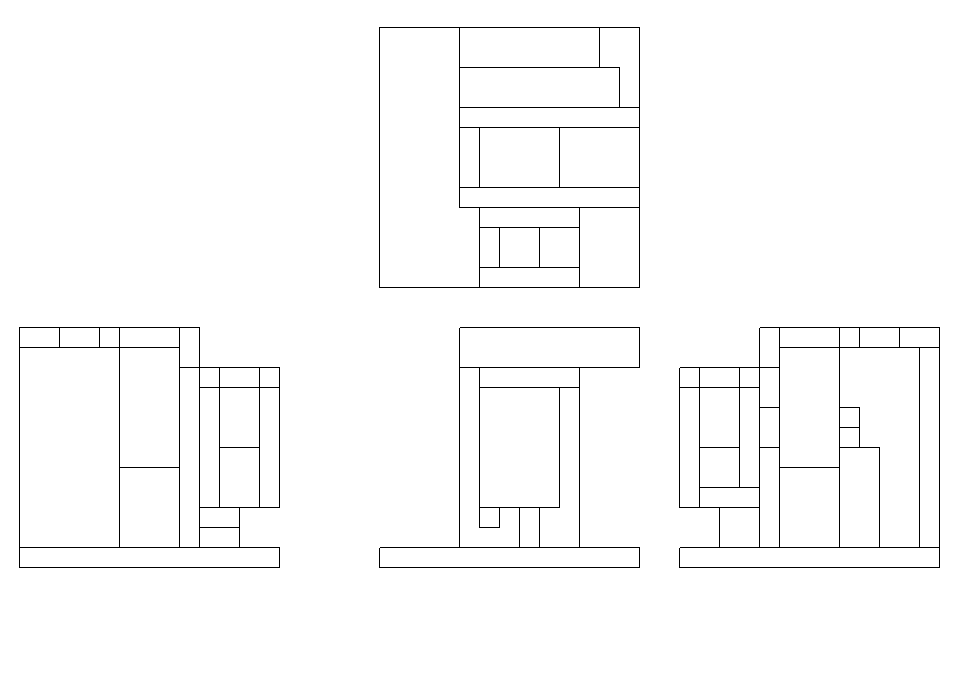
旋回盤、旋回装置、仰俯装置、照準器、高射装置、引金、電動機、喞筒ヲ含ム
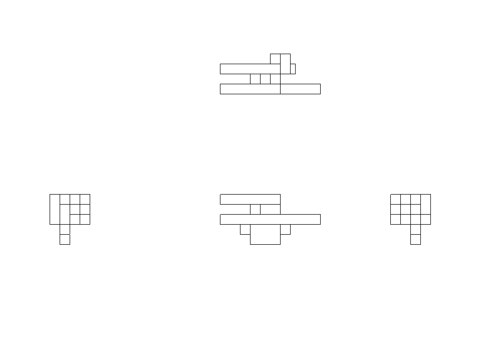
推進発条筒、駐退機、装填発条筒、装填機、仰俯歯弧ヲ含ム
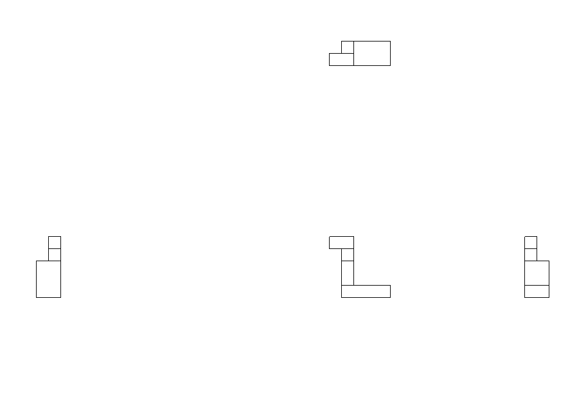
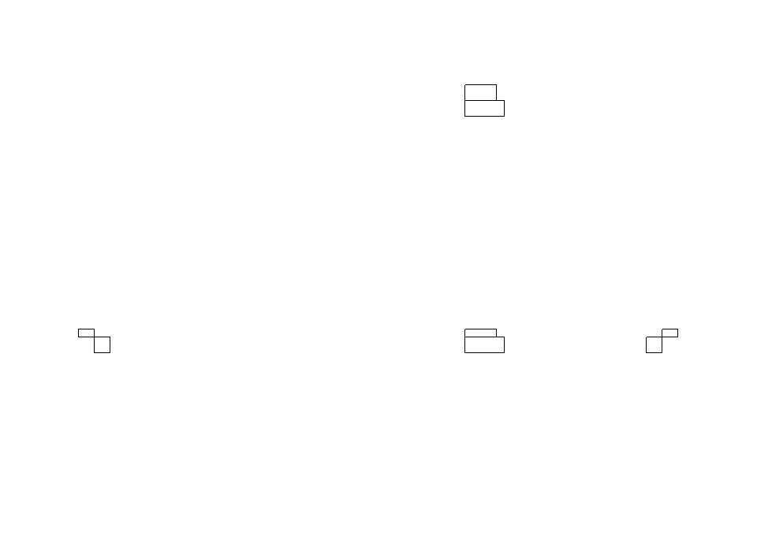
薬莢転落装置ヲ含ム
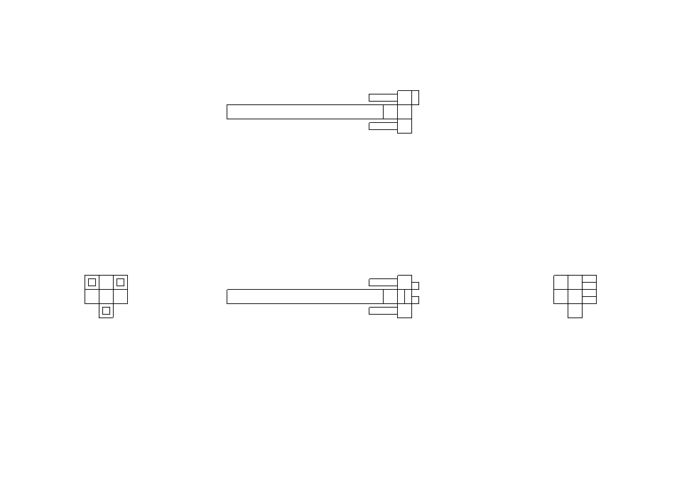
薬室、発火装置、殻抜装置、閉鎖機、駐退機活塞桿、推進桿、信管調定器ヲ含ム
水平鎖栓
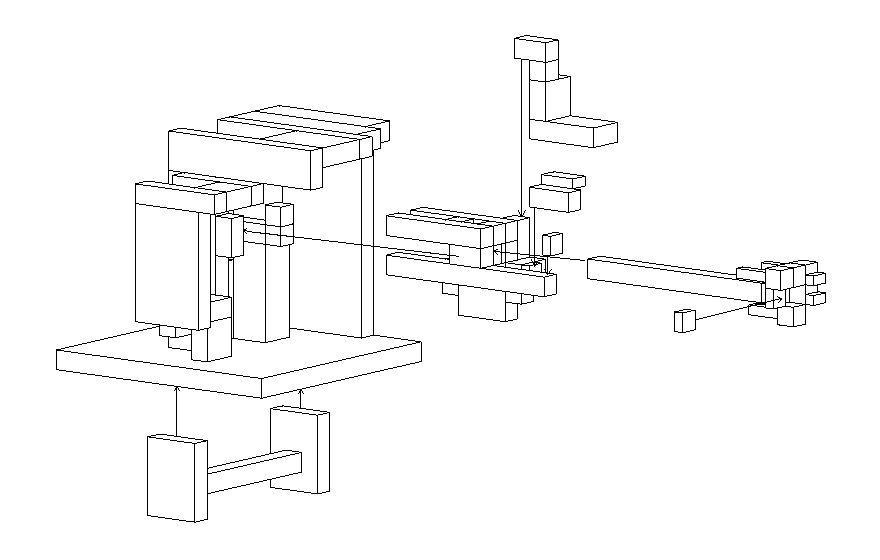
砲架・防楯・把手・装填台 鉄延棒 ニ本
砲身・砲尾・尾栓 鉄延棒 一本
砲鞍・装填頭・装填架 鉄延棒 一本
照準器・高射装置 板硝子 一枚
高射装置・信管調定器 時計 一個
電動機・喞筒・高射装置・電路 粘性活塞 一基
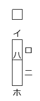
イ,時限信管 ロ,砲弾 ハ,着発信管 ニ,薬莢 ホ,火管
時限信管 時計 一個
砲弾 鋼鉄塊 二個
薬莢 真鍮塊 二個
炸薬・装薬 混合火薬 二個
時限信管秒時 〇・一五 ～ 四秒
最大信管誤差 ±〇・〇三秒
初速 八十米毎秒
全幅 十粍
全長 四十七粍
内 砲弾長 二十粍
内 薬莢長 二十八粍
砲弾重量 六百瓦
内 炸薬量 六十瓦
薬莢重量 三百瓦
内 装薬量 百十瓦
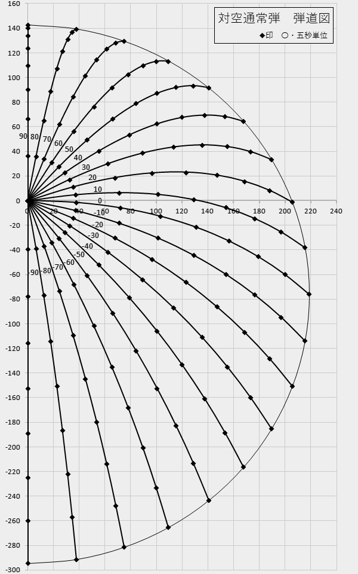
散布界直径（距離二百五米）
弾着五割 五米
弾着八割 六米
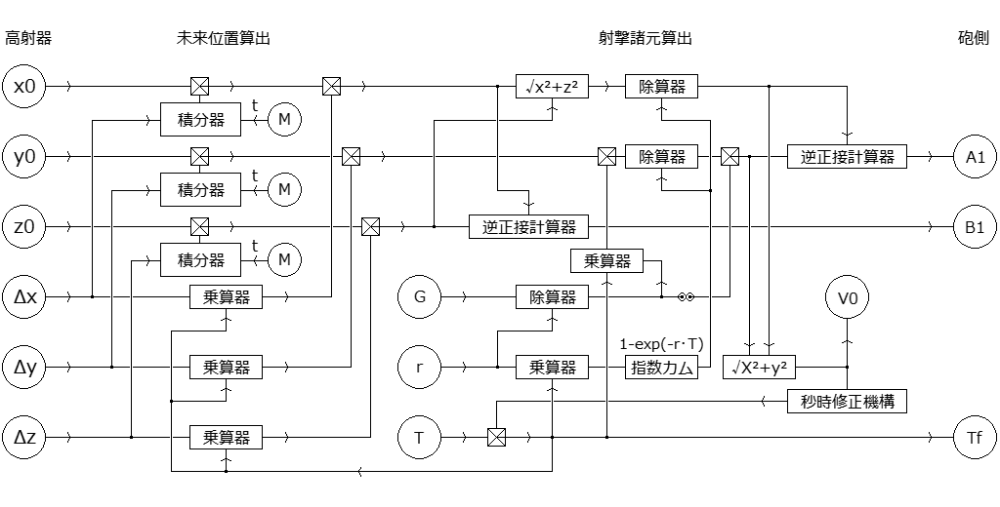
射手ノ例
艦■■ノ十二糎七単装高角砲トハ無関係
Ｗ■ノヴイクトリヤ嬢トハ無関係
装填手ノ例
艦■■ノ十二糎七連装高角砲トハ無関係
眼鏡ハ作者ノ趣味也
艦■■ノ十二糎七連装高角砲後期型トハ無関係
砲員ハ以下ノ位置ニ割リ当テル
利手 assets/handheldnavalgun/textures/entity/mob_crew_mh.png
逆 assets/handheldnavalgun/textures/entity/mob_crew_oh.png
適正ハ ＤＥＦＡＵＬＴ型 及ビ ＳＲ２型
各位置ニテ、上ハ射手、下ハ装填手トナルヨウニ収容ス
砲員ノ性別ハ不問、又ハ不詳
一例トシテ作者ハ男子多数説ヲ推ス
砲員ノ外装作成ニアタリＭＭＭ氏ノｌｉｔｔｌｅＭａｉｄＭｏｂヲ参考致シマシタ
篤ク御礼申シ上ゲマス
Copyright 2016 Iunius118